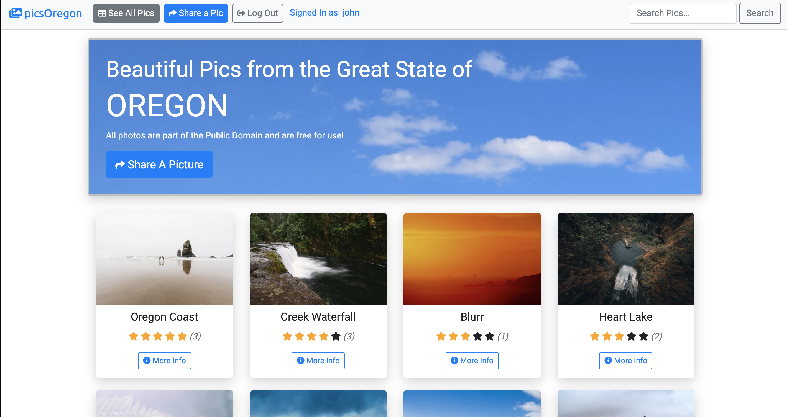
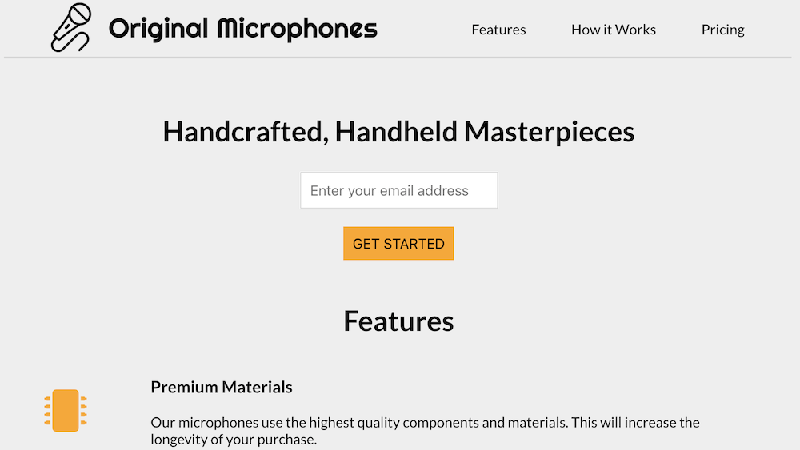
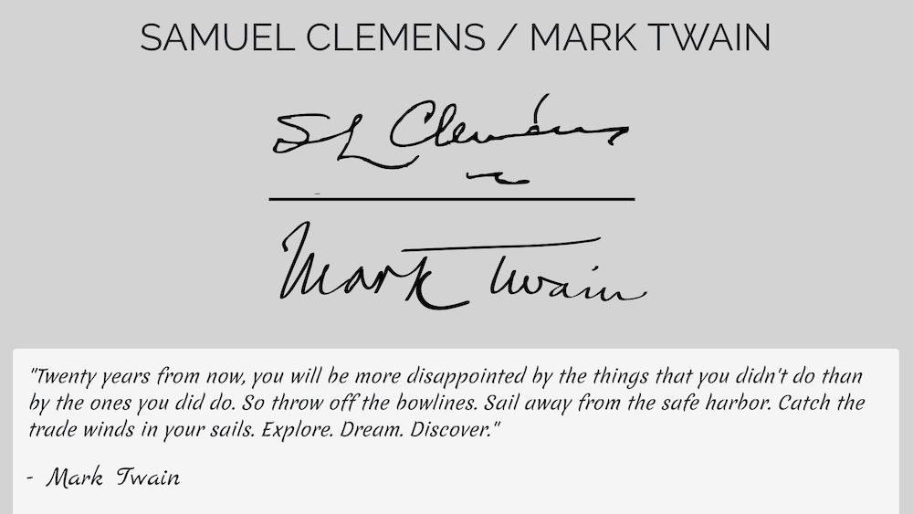
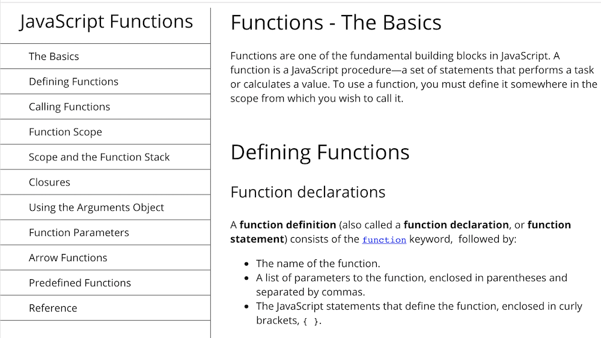

Projects
Pics Oregon
This website allows users to see photos of Oregon, as well as submit photos to be included on the
site. The site includes admin/user roles, user sign up, user comments, user reviews, user
Google Maps integration, profile pages, and much more.
Project Type : Dynamic Website
Technology Used : HTML5, CSS3, Node, MongoDB, Bootstrap 4

Project Type : Dynamic Site
Technology Used : HTML5, CSS3, Node, MongoDB, Bootstrap 4

Project Type : Static Website
Technology Used : HTML5, CSS3

Project Type : Static Website
Technology Used : HTML5, Bootstrap 4, CSS3

Project Type : Static Website
Technology Used : HTML5, CSS3
About
I am a Web Developer, Certified Scrum Master, and Project Management Professional with 18 years of experience in the Portland, OR tech sector.
In my professional career I have been a Project Manager (PMP), Engineering Manager, Embedded Systems Engineer, Software Test Engineer, Electrical Engineer, Acoustic Engineer, Sound Engineer, Loudspeaker Engineer, and Web Developer.
Recently I have become much more interested in web development. My goal is to be a fulltime web developer, and eventually manage web development teams.